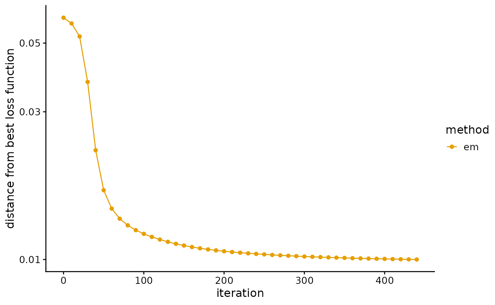
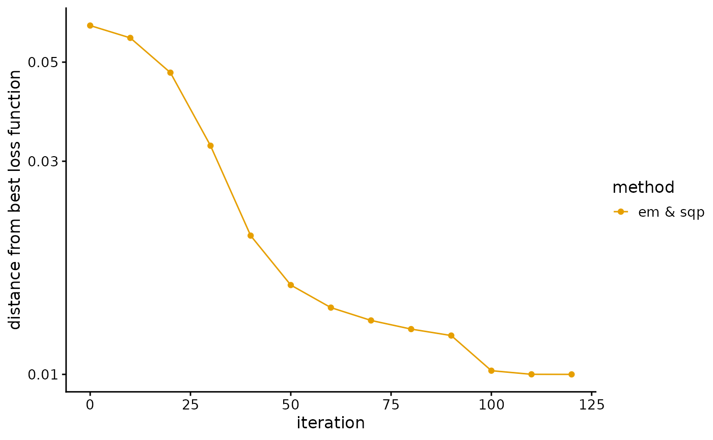
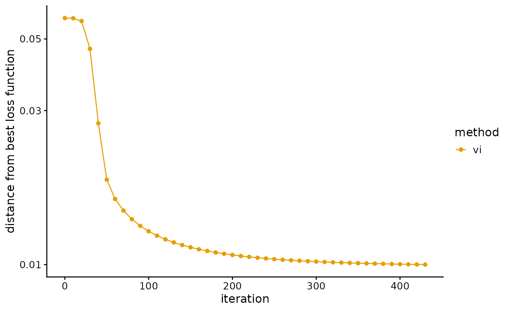
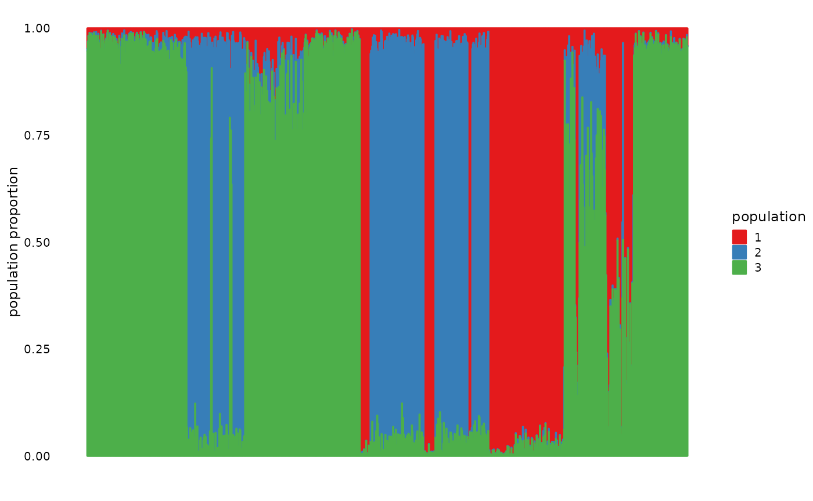

PSD model and data
We consider the first chromosome data from the 1000 Genomes Project (TGP) and use a PSD model to fit these data.
library(AwesomePackage)
data(data_TGP)Fit PSD model by EM algorithm
We fit the PSD model with EM algorithm, and use the loss function as a stopping criterion.
result_TGP_em <- psd_fit_em(data_TGP, 3, 1e-5, 500)EM algorithm converges slowly. It takes about 450 EM iterations to reach the predetermined accuracy. In addition, the fitting result of EM algorithm is not very accurate. We import the pre-trained results directly.
data(result_TGP_em)We plot the loss function against the number of iterations using package ggplot2, the loss function records once for 10 iterations.
L <- result_TGP_em$Loss
plot_loss(L, 10, "em")
We plot the ancestral proportions of individuals using package ggplot2.
P <- result_TGP_em$P
pops <- order(colMeans(P))
colors <- c("#E69F00", "#56B4E9", "#009E73")
plot_structure(P, pops, colors)Fit PSD model by SQP algorithm
We fit the PSD model with SQP algorithm, and use the loss function as a stopping criterion.
result_TGP_sqp <- psd_fit_sqp(data_TGP, 3, 1e-5, 50, 100)Although SQP algorithm converges fast, it is easy to converge to the local optimal value. To prevent this bad scenario, we start with 100 EM iterations, and then only need about 30 SQP iterations to reach the accuracy requirement. Notice that the fitting result of the SQP algorithm is excellent. We import the pre-trained results directly.
data(result_TGP_sqp)We plot the loss function against the number of iterations using package ggplot2, the loss function records once for 10 iterations.
L <- result_TGP_sqp$Loss
plot_loss(L, 10, "sqp")
We plot the ancestral proportions of individuals using package ggplot2.
P <- result_TGP_sqp$P
pops <- order(colMeans(P))
colors <- c("#E69F00", "#56B4E9", "#009E73")
plot_structure(P, pops, colors)
Fit PSD model by VI algorithm
We fit the PSD model with VI algorithm, and use the loss function as a stopping criterion.
result_TGP_vi <- psd_fit_vi(data_TGP, 3, 1e-5, 500)Similar to EM algorithm, the convergence of VI algorithm is also relatively slow, and about 440 iterations are needed to reach the accuracy requirement. But its fitting result is much better than EM algorithm. We import the pre-trained results directly.
data(result_TGP_vi)We plot the loss function against the number of iterations using package ggplot2, the loss function records once for 10 iterations.
L <- result_TGP_vi$Loss
plot_loss(L, 10, "vi")
We plot the ancestral proportions of individuals using package ggplot2.
P <- result_TGP_vi$P
pops <- order(colMeans(P))
colors <- c("#E69F00", "#56B4E9", "#009E73")
plot_structure(P, pops, colors)